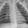

28 × 28 pixelsPneumonia Image Lab
Follow a chest X-ray through a trained CNN. Inspect real feature maps and calculations, then explore errors and decision thresholds.
Interactive projects to understand how imaging models work—and how to read the evidence behind them.
Explore the projects
28 × 28 pixelsFollow a chest X-ray through a trained CNN. Inspect real feature maps and calculations, then explore errors and decision thresholds.
Walk through the paper’s results and key concepts with interactive examples of focal loss, thresholds, patient splitting, and calibration.
Educational projects about model behavior and research interpretation.